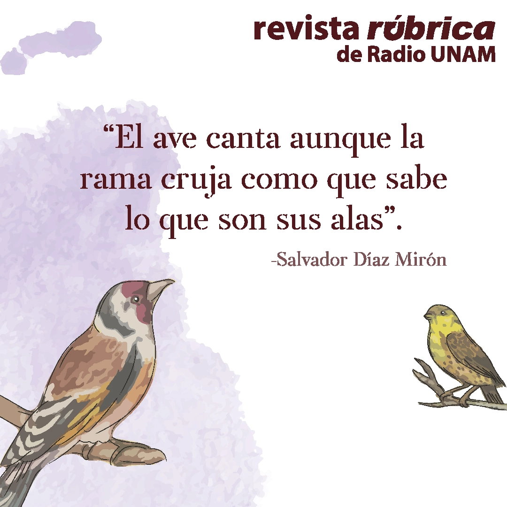
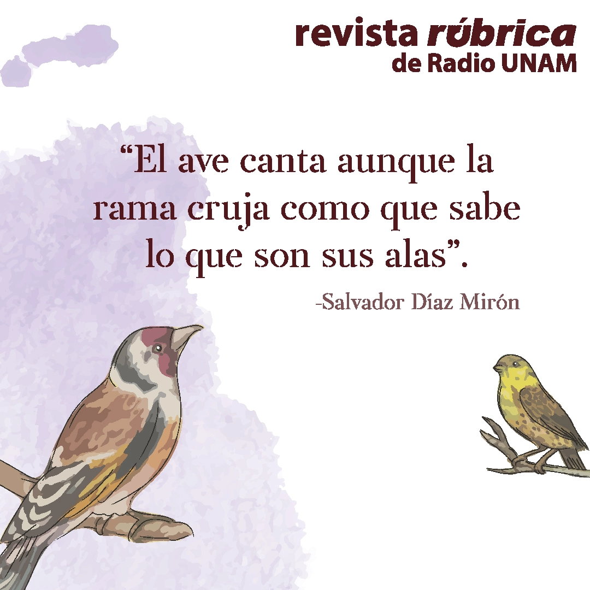
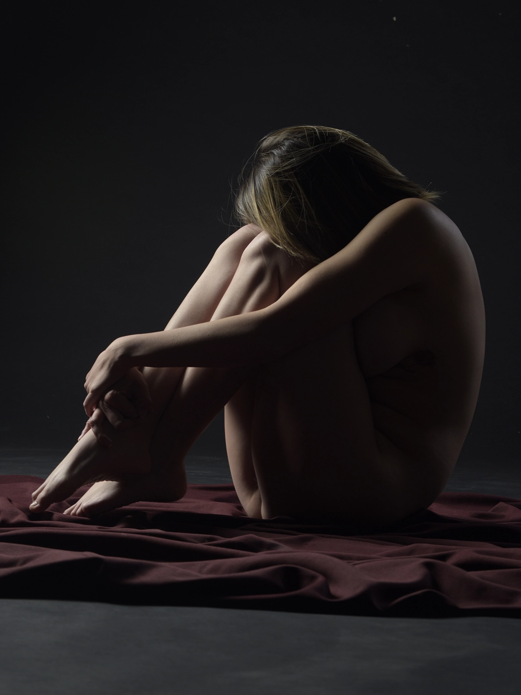
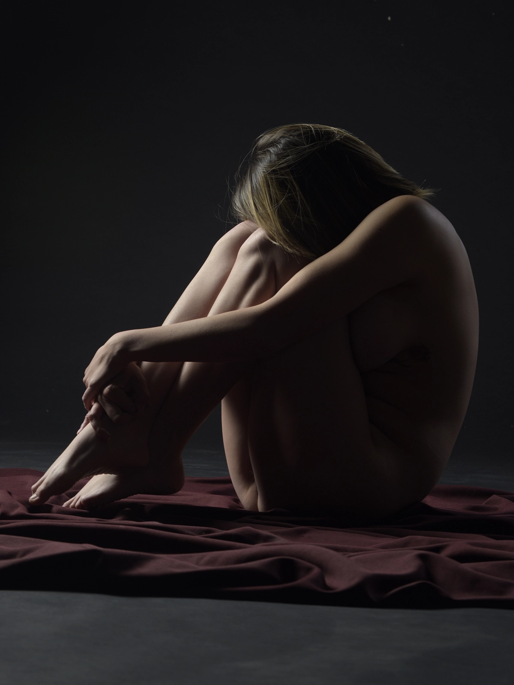
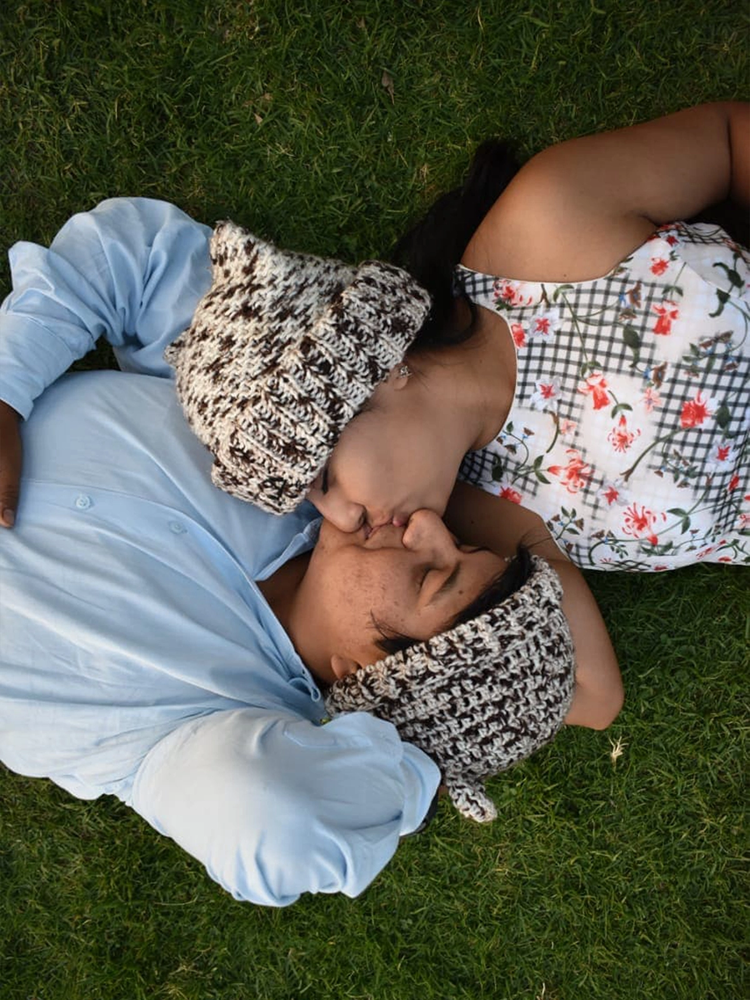
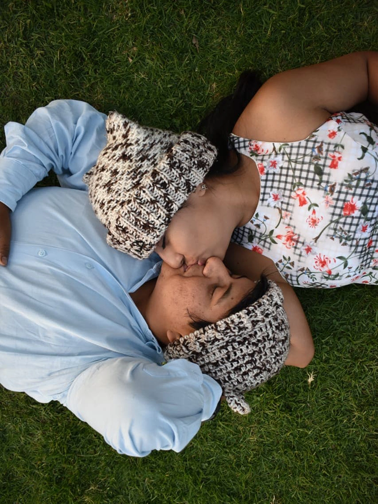

¡Hola, hola! mucho gusto, me llamo Luz Sánchez
Soy _
Mi pasión por el aprendizaje y la colaboración se refleja en mi sólido compromiso con el crecimiento personal y el de la organización. Mi determinación me impulsa a descubrir las soluciones más efectivas para alcanzar los objetivos planteados.
Mi objetivo es seguir avanzando en mi desarrollo profesional en un entorno colaborativo. A través de mi participación en proyectos desafiantes, ustedes experimentarán un aumento tangible en la resolución de problemas y en la calidad de resultados.

Conoce el corazón detrás de cada proyecto
Soy Luz Sánchez, una apasionada diseñadora web y gráfica de 28 años, nacida en la vibrante
Ciudad de México.
Desde mi infancia, he mantenido una profunda afinidad por el diseño, a tal grado que solía
perderme durante horas plasmando mis ideas en papel. Con el tiempo, me di cuenta de que mi pasión
por el diseño era más que un simple hobby, y decidí convertirlo en mi profesión.
Como persona, me defino como alguien decidida,
apasionada y honesta. Sin embargo, también debo admitir mi tendencia a obsesionarme con
los detalles; es una característica que simplemente no puedo evitar. Soy una persona con matices,
tanto virtudes como imperfecciones, pero siempre en búsqueda constante de
crecimiento y aprendizaje en todas las
facetas de la vida. La gratitud y la humildad son valores fundamentales para mí, y me esfuerzo
por retribuir de manera constante las bendiciones que la vida me ha brindado.
Mis pasatiempos
Considero esencial mantener un equilibrio entre mi vida personal y laboral. Para lograrlo, disfruto de pasiones como el patinaje, la fotografía y la exploración urbana, así como el amor por viajar y experimentar nuevas culturas. La búsqueda de adrenalina me lleva a saltar en paracaídas y escalar montañas. Soy una persona curiosa y siempre busco nuevos desafíos y experiencias para crecer en todas las facetas de la vida. Aunque soy perfeccionista y me esfuerzo por hacer las cosas de la mejor manera posible, también soy una apasionada del arte en todas sus formas.
¡Descubre mis habilidades y conocimientos!
Mi educación
Oracle Next Education en Alura Latam
Ene. 2023 – Oct. 2023
Programación
Universidad Autónoma Metropolitana
Sep. 2017 - Oct. 2021
Diseño de la Comunicación Gráfica
Título y cédula profesional.
Graduada con uno de los mejores promedios de mi generación.
Otros estudios
A pesar de ser egresada, sigo aprendiendo día a día mediante cursos, capacitaciones o programas.


Software
Adobe Photoshop
Nivel intermedio
Adobe Illustrator
Nivel avanzado
Adobe InDesing
Nivel avanzado
Adobe Premiere Pro
Nivel intermedio
Figma
Nivel básico
Visual Studio Code
Nivel intermedio
Descubre mis contribuciones a distintas empresas

Diseñadora gráfica
Universidad Autónoma Metropolitana
May. 2023 – Actualmente
- Creación, edición y publicación de contenido en redes sociales, incrementando el alcance en un 20% respecto al año anterior, con más de 100 publicaciones mensuales por red social.
- Aporté al diseño y optimización de sitios web institucionales mediante feedback y participación en sesiones de planeación, mejorando continuamente la usabilidad.
- Responsable de recopilar y difundir información sobre eventos universitarios, aumentando la asistencia en un 15% aproximadamente.

Diseñadora Web
Editorial luxpluslux
Dic. 2021 – Dic. 2022
- Diseñé el sitio web priorizando la usabilidad y satisfacción del usuario desde el inicio, lo que aseguró una experiencia consistente y de calidad a lo largo del tiempo.
- Supervisé el mantenimiento del sitio web, generando un aumento en la visibilidad en línea de la editorial, atrayendo más tráfico de usuarios. Esto resultó en un incremento del 10% en las suscripciones en línea tras los primeros meses del mantenimiento regular.

Diseñadora Web
Anuncios Rodríguez
Nov. 2021 – Ene. 2022
- Rediseñé y reestructuré el sitio web, considerando los objetivos de la marca y las necesidades del usuario.
- Implementé un diseño responsivo y una interfaz intuitiva para facilitar la navegación y mejorar la experiencia de usuario.
- Optimicé y adapté los materiales gráficos para agilizar el acceso al contenido del sitio web de manera eficiente.

Diseñadora Web
Radio UNAM
May. 2021 – Nov. 2021
- Participé en reuniones de planificación para definir la estrategia de contenidos digitales, generando materiales gráficos creativos y atractivos para la audiencia.
- Planifiqué y desarrollé el sitio web de la revista Rúbrica, facilitando el acceso rápido y fácil a los contenidos y aumentando el impacto en la difusión de contenido.

Diseñadora Gráfica
LEGA
Ago. 2019 – Mar. 2022
- Revisé, ajusté y adapté artes en preprensa para mejorar el rendimiento de los materiales de producción, sin comprometer la calidad durante el proceso de impresión.
- Diseñé e incorporé nuevos productos publicitarios para ampliar la variedad de opciones disponibles para los clientes en la cartelera de productos.
Portafolio
Me encantaría compartir mis proyectos contigo y espero que disfrutes de mi trabajo tanto como lo hice al crearlo.


Diseño para redes sociales
Unidad Xochimilco
UAM
Fui responsable de confeccionar contenido gráfico para las redes sociales de la Universidad Autónoma Metropolitana, Unidad Xochimilco, incluyendo imágenes promocionales y académicas, manteniendo la esencia de la institución.


Diseño para redes sociales
Revista Rúbrica
Radio UNAM
En 2021, lideré el diseño gráfico en las redes sociales de la Revista Rúbrica, creando imágenes promocionales para artículos y actividades de Radio UNAM. Adapté el estilo gráfico de la revista para fomentar la interacción y ampliar la difusión del proyecto.


 

Diseño para redes sociales
Boletín Vaivén
Vaivén
En 2021, participé en Vaivén, un proyecto de diseño editorial para el boletín universitario, encargándome de planificar, crear, redactar y diseñar contenidos para ampliar la audiencia y promover la movilidad universitaria mediante la compartición de experiencias.


Diseño para redes sociales
Museo del Chocolate
Mucho Chocolate
En 2021, participé en un proyecto universitario ficticio para aumentar la asistencia al Museo Mundo Chocolate en la Ciudad de México, enfocándonos en su rediseño y la gestión de contenido en redes sociales.


Diseño para redes sociales
Postres Bombón
Bombón
En mi proyecto ficticio, empleé la marca mexicana Postres Bombón, concentrándome en el diseño de contenido para sus redes sociales con el objetivo de fortalecer su presencia en línea.


Diseño para redes sociales
Boletín Vaivén
Proyecto


Fotografía
Vida & Naturaleza
Fotografía de paisaje
A través de mis fotografías, he explorado la vida, desde lugares naturales hasta bulliciosas calles urbanas. Cada imagen celebra la diversidad de nuestro planeta y te invita a conectarte con tu entorno.


Fotografía
Sabor a Fresa
Fotografía de producto
Esta colección es un tributo a la delicia y la frescura de esta fruta. A través de mis fotografías, he inmortalizado la tentación de las fresas en su máxima expresión.


Fotografía
Luz y Sombras
Fotografía de estudio
En esta serie, se explora de manera artística la relación entre la luz y la oscuridad en el contexto de la fotografía de estudio. Cada fotografía constituye un análisis de cómo la iluminación puede transformar y destacar la belleza de las formas humanas.


 


Fotografía
Arte Constructivista
Fotografía de estudio
Estas fotografías son un testimonio visual de la esencia del movimiento constructivista en el mundo artístico. A través de estas imágenes, se busco transmitir la esencia del constructivismo, donde la forma y la función se unen en una armonía visual única.


Fotografía
Retratos de la Humanidad
Fotografía de retrato
A través de estas fotografías, he buscado celebrar la belleza y la autenticidad de cada individuo, recordándonos la riqueza que aporta la diversidad a nuestro mundo.


 

¿Quieres contactarme?
Completa el siguiente formulario y me pondré en contacto contigo lo antes posible.